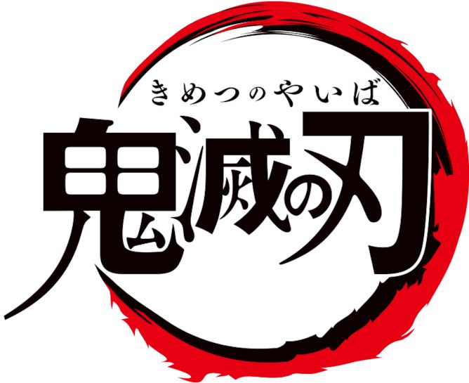
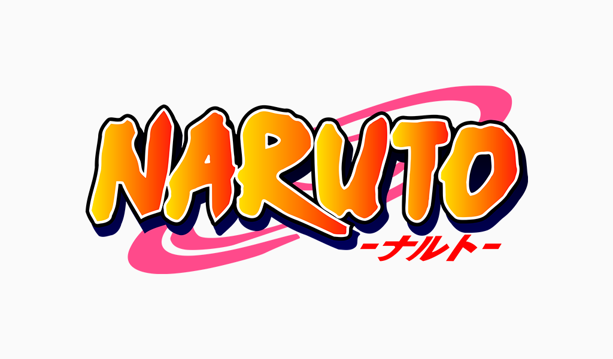
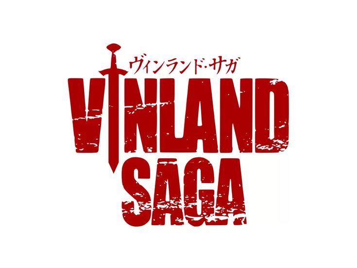

JOJO'S JoJo's Bizarre Adventure trata sobre las extrañas aventuras de la familia Joestar, un linaje cuyos miembros deben luchar contra fuerzas sobrenaturales a lo largo de varias generaciones.
Jujutsu Kaisen Jujutsu Kaisen sigue a Yuji Itadori, un estudiante con fuerza sobrehumana que se convierte en el anfitrión de Ryomen Sukuna, el Rey de las Maldiciones.
Kimetsu no Yaiba  Kimetsu no Yaiba (Demon Slayer) trata sobre Tanjiro Kamado, un joven que busca vengar a su familia asesinada por un demonio y, al mismo tiempo, curar a su hermana menor, Nezuko, quien fue convertida en demonio pero conserva su humanidad, uniéndose al Cuerpo de Cazadores de Demonios para luchar contra estas criaturas y encontrar una cura.
Naruto  Naruto cuenta la historia de Naruto Uzumaki, un huérfano en la Aldea Oculta de la Hoja que alberga al poderoso Zorro Demonio de Nueve Colas, y sueña con convertirse en Hokage (líder) para ganar el respeto de su aldea.
Vinland Saga  Vinland Saga es una serie de manga y anime que sigue la historia de Thorfinn, un joven guerrero islandés que busca vengar la muerte de su padre, Thors, a manos del mercenario Askeladd.